JM-Orgue
JM-Orgue ist eine virtuelle Pfeifenorgel für Windows, macOS und Linux. Das Programm spielt Hauptwerk- und GrandOrgue-Sample-Sets direkt ab, auch große Surround-Sets, und wird mit einer MIDI-Tastatur, einem Orgelspieltisch oder der Maus gespielt. Dieses Handbuch führt anhand von Bildschirmfotos der Version 0.9.14 durch das Programm.
© Martijn van der Kolk. Die Bildschirmfotos wurden mit Demo-Orgeln und eigenen Testsets erstellt; Netzwerkadressen, Zugriffstoken und Benutzerordner sind unkenntlich gemacht.
1. Erste Schritte
Installieren
Laden Sie das Installationsprogramm der neuesten Version von der Release-Seite des Projekts herunter (für Windows JM-Orgue_<Version>_x64-setup.exe) und starten Sie es. Die Installation erfolgt pro Benutzer und braucht keine Administratorrechte. Für Windows gibt es auch ein MSI-Paket, für macOS ein DMG und für Linux ein AppImage oder deb.
Das Programm selbst darf frei genutzt werden. Die Sample-Sets sind nicht enthalten: Sie erhalten sie bei den jeweiligen Herstellern. Auf der Startseite der Bibliothek stehen einige Hersteller, die Sets kostenlos anbieten.
Aktualisieren
JM-Orgue prüft selbst, ob es eine neue Version gibt. Falls ja, erscheint oben eine Meldung. Wählen Sie Jetzt aktualisieren: Das Programm lädt das Update herunter, prüft die Signatur, installiert es und startet neu. Wenn Sie zuerst nur herunterladen möchten, wählen Sie Herunterladen. Von Hand suchen können Sie unter Allgemeine Einstellungen → Update und Feedback → Auf Updates prüfen.
Die drei Hauptbildschirme
Oben stehen drei Reiter: Orgel (Spielen), Orgel-Einstellungen (alles, was zur geladenen Orgel gehört) und Allgemeine Einstellungen (alles, was für das ganze Programm gilt). Mit F1, F2 und F3 wechseln Sie direkt zwischen ihnen. Das Kreuz neben dem Orgelnamen schließt die Orgel und bringt Sie zur Bibliothek zurück.
2. Die Bibliothek
Nach dem Start sehen Sie die Orgel-Bibliothek: eine Karte pro Orgel mit Foto, Name, Erbauer, Ort und Anzahl der Register. Klicken Sie auf eine Karte, um die Orgel zu laden.
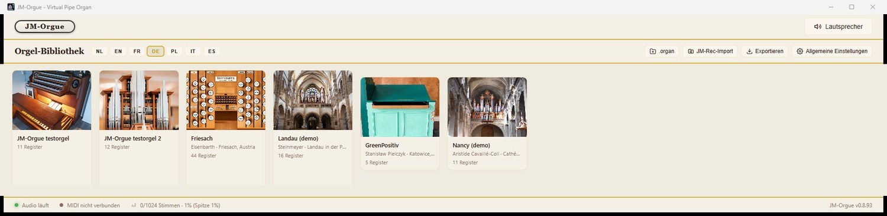
Eine Orgel hinzufügen
- .organ: Wählen Sie eine Orgeldefinition (GrandOrgue
.organoder eine Hauptwerk-Definition). Sie wählen die Definitionsdatei, nicht den losen Sample-Ordner: Nur die Definition kennt Register, Koppeln, Tremulanten und eventuelle zusätzliche Aufnahmepositionen. - JM-Rec import: importiert ein mit JM-Rec erstelltes Sample-Set.
- Exportieren: macht aus einem Ordner mit Samples eine Orgeldefinition (
.organ), die Sie danach mit der Schaltfläche .organ laden können.
Kartenschaltflächen: Foto, Suche, Entfernen
Wenn Sie auf eine Karte zeigen, erscheinen oben rechts im Foto drei Schaltflächen: Online nach einem Foto suchen (Globus), Bild selbst wählen (Kamera) und Aus Bibliothek entfernen (Kreuz). Entfernen nimmt nur die Karte aus der Bibliothek; die Dateien auf Ihrer Festplatte bleiben erhalten. Wenn Sie eine Karte 3 Sekunden gedrückt halten, sucht das Programm das Foto erneut.
Die Online-Suche zeigt einige frei verwendbare Fotos von Wikimedia Commons, anhand von Name, Erbauer und Ort aus dem Set. Klicken Sie auf ein Foto, um es zu übernehmen; Quelle und Lizenz erscheinen unter der Karte. Enthält das Set zu wenig, um etwas zu finden, geben Sie selbst einen Suchbegriff ein (Kirche, Ort oder Orgelname), und zwar im Feld oben im Fenster, und wählen Sie Suchen.
3. Eine Orgel laden und spielen
Laden
Beim Laden liest JM-Orgue von jeder Pfeifenaufnahme den Anfang in den Speicher; der Rest wird während des Spielens nachgeladen. Ein großes Surround-Set kann daher einen Moment dauern; der Fortschrittsbalken zeigt, wie weit es ist.
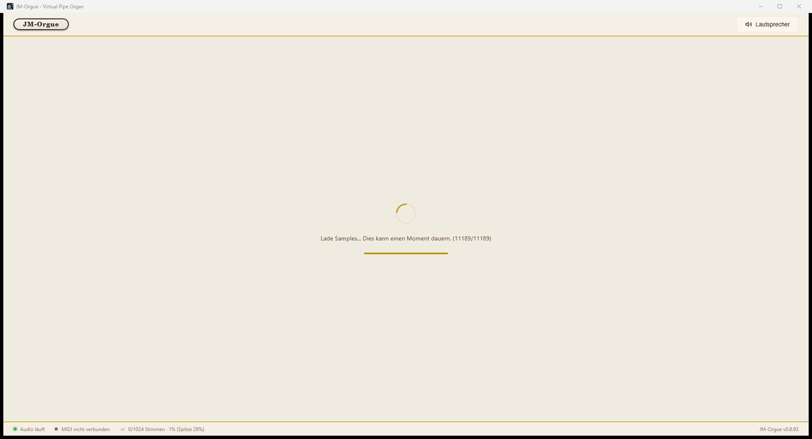
Der Motor
Nach dem Laden ist der Orgelmotor standardmäßig an, sobald das Set eine Motoraufnahme enthält, und ein leiser Wind ist sofort zu hören. Soll in Stille geübt werden, schalten Sie den Knopf Motor in der Werkzeugleiste aus; die gelbe Leiste erscheint erst, wenn wirklich kein Motor läuft. Welche Nebengeräusche standardmäßig an sind und wie laut, regeln Sie in der Werkzeugleiste mit dem kleinen Mischer neben der Nebengeräusch-Schaltfläche.
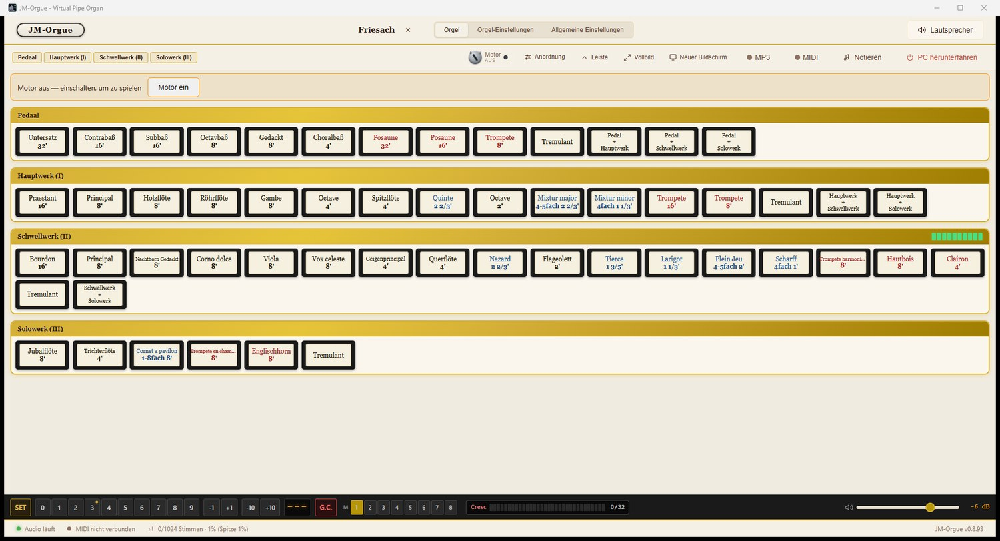
Register, Koppeln und Tremulanten
Jedes Manual hat einen eigenen Kasten mit seinen Registern. Klicken Sie auf einen Registerknopf, um das Register zu ziehen; gezogene Register werden gelb. Die Farbe des Namens zeigt die Familie: Zungenstimmen sind zum Beispiel rot, Mixturen und Quinten blau. In jedem Kasten stehen auch der Tremulant und die Koppeln (zum Beispiel „Hauptwerk + Schwellwerk“). Ein grüner Balken rechts in der Kopfzeile eines Manuals zeigt die Stellung des Schwellkastens.
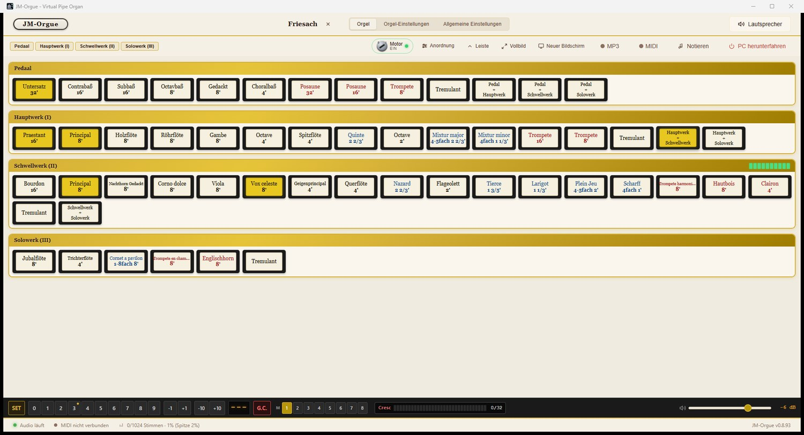
Die Setzerleiste
Unten steht die Setzerleiste mit den Bedienelementen eines Orgelspieltischs:
| Element | Funktion |
|---|---|
| SET und 0–9 | Drücken Sie SET und danach eine Ziffer, um die aktuelle Registrierung zu speichern; nur die Ziffer ruft sie ab. Ein kleiner Punkt an einer Ziffer bedeutet, dass dort eine Registrierung gespeichert ist. |
| −1 / +1, −10 / +10 | Springt zur vorherigen oder nächsten Registrierung oder zehn weiter. |
| G.C. | General Cancel: alle Register aus. |
| M 1–8 | Speicherebenen: acht getrennte Bänke mit Registrierungen. |
| Cresc | Das Generalcrescendo (siehe Kapitel 7). Der Balken zeigt die aktuelle Stufe. |
| Lautstärkeregler | Gesamtlautstärke. Ein Doppelklick setzt sie auf den Standardwert zurück; mit dem Mausrad ändern Sie sie in Schritten von 1 dB. |
Jede Schaltfläche der Setzerleiste kann mit einer Taste Ihres eigenen Spieltischs verbunden werden: Rechtsklick (oder 3 Sekunden gedrückt halten) und danach die Taste am Spieltisch drücken.
MIDI-Kanal pro Manual lernen
Sie müssen nicht erst in die Orgel-Einstellungen: rechtsklicken Sie auf den Namen eines Werks über den Registern — oder berühren Sie ihn 2 Sekunden lang auf einem Touchscreen — und das Programm fragt nach der tiefsten und höchsten Taste dieses Manuals. So wird der Kanal eingestellt, ohne den Spieltisch zu verlassen.
4. Die Werkzeugleiste
Über den Registern steht die Werkzeugleiste. Links stehen die Manuale (Pedal, Hauptwerk, …) als Schaltflächen: Damit blenden Sie ein Manual ein oder aus. Rechts stehen die folgenden Funktionen.
| Schaltfläche | Funktion |
|---|---|
| Motor | Orgelmotor ein oder aus. |
| Anordnung | Öffnet das Anordnungsmenü (siehe unten). |
| Leiste | Zeigt oder verbirgt die Hauptleiste mit den Reitern und der Profilschaltfläche. |
| Vollbild | Spieltischmodus: nur die Register und die Setzerleiste (F11). |
| Neuer Bildschirm | Öffnet ein zusätzliches Fenster mit denselben Registern, zum Beispiel für einen zweiten Monitor oder eine zweite Tastatur. |
| MP3 | Nimmt auf, was Sie hören. Die Aufnahme landet in Dokumente\JM-Orgue-opnames. Klicken Sie auf den roten Zähler, um zu stoppen; danach meldet das Programm, wo die Datei liegt. |
| MIDI | Nimmt auf, was Sie spielen (nur Noten), als .mid-Datei. Klicken Sie auf den blauen Zähler, um zu stoppen, und wählen Sie den Speicherort. |
| Notieren | Öffnet das Notationsfenster: Noten erscheinen, während Sie spielen, mit Ebenen, Overdub und Bearbeitung. Auch eine vorhandene MIDI-Datei lässt sich dort öffnen. |
| PC herunterfahren | Beendet die Software und den Computer, nach einer Bestätigung; der letzte Zustand wird vorher gespeichert. Rechtsklick oder 3 Sekunden gedrückt halten verbindet die Schaltfläche mit einer Taste Ihres Spieltischs. |
Das Anordnungsmenü
Mit Anordnung passen Sie die Darstellung an Ihren Bildschirm an: Einpassen misst die Knöpfgröße so, dass alle Register ins Bild passen, die Minus/Plus-Schaltflächen ändern Breite und Höhe der Knöpfe, und außerdem wählen Sie Manuale untereinander oder nebeneinander (vertikal), runde statt rechteckiger Knöpfe und die Position der Koppeln (im Manual oder in einer eigenen Leiste). Die Auswahl wird pro Orgel gemerkt.
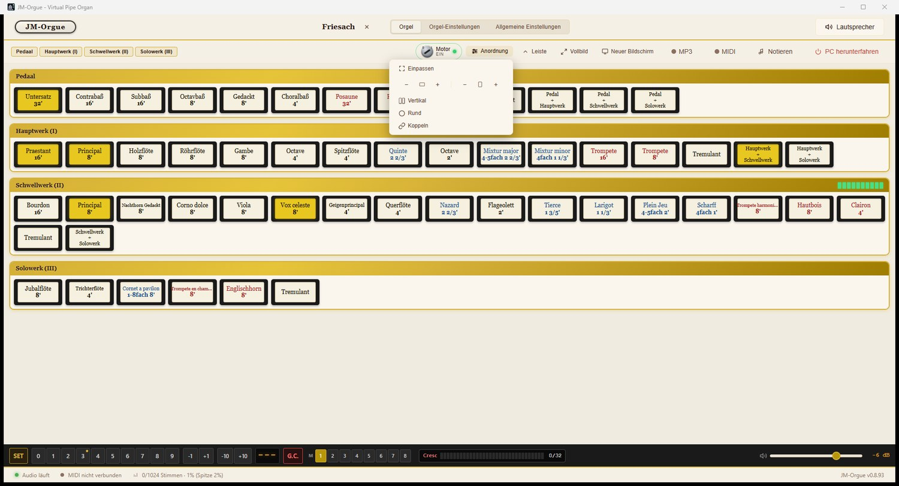
Vollbild (Spieltischmodus)
In diesem Modus verschwinden die Titelleiste, die Windows-Taskleiste und die Hauptleiste: Sie sehen nur die Register und die Setzerleiste. Oben steht ein schmaler Streifen mit vier Schaltflächen: Leisten (die Hauptleiste vorübergehend zurückholen), Motor ein (ein oder aus), Vollbild beenden und PC herunterfahren (Software und Computer beenden). F11 schaltet den Modus ein und aus; Esc schaltet ihn aus.
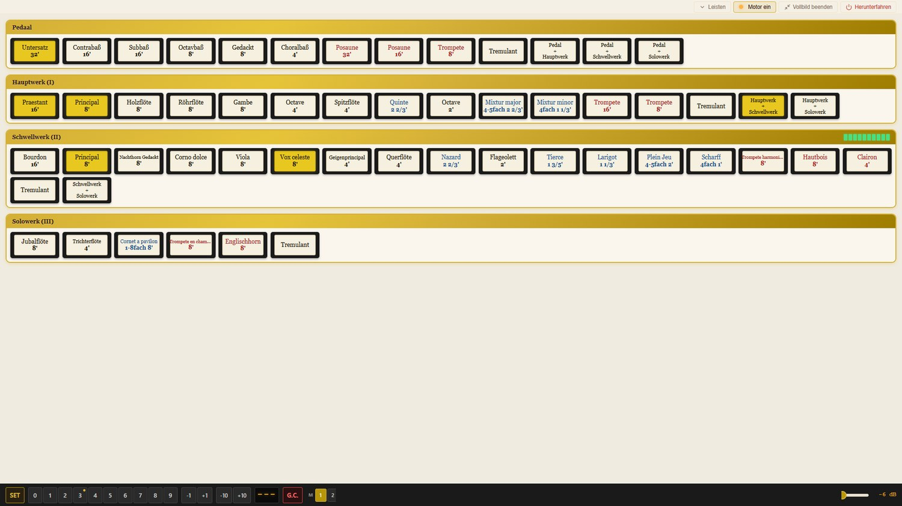
Ein zweiter Bildschirm
Neuer Bildschirm öffnet ein eigenes Fenster, das Sie auf einen anderen Monitor ziehen oder klein neben dem Hauptfenster stehen lassen können. Es hat eigene Anordnungseinstellungen: Sind die Knöpfe zu klein, wählen Sie Anordnung und stellen Sie Knopfbreite und Knopfhöhe ein, oder wählen Sie Manuale untereinander oder nebeneinander.
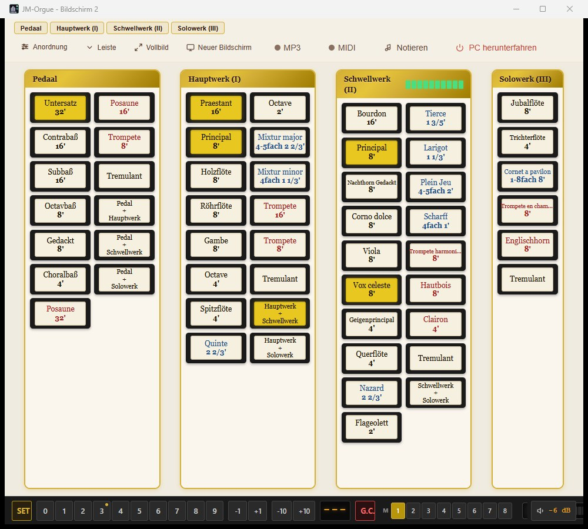
5. Mehrere Hörpositionen
Manche Sample-Sets wurden an mehreren Stellen in der Kirche aufgenommen, zum Beispiel nah, vorn, in der Mitte und hinten. Ein solches Set zeigt in der Werkzeugleiste die Schaltflächen Perspektive, eine pro Position. Klicken Sie auf eine Position, um sie ein- oder auszuschalten; es können mehrere gleichzeitig klingen. Rechts davon steht die Hörposition: Der Regler zwischen „nah“ und „hinten“ blendet stufenlos zwischen den aufgenommenen Positionen über.
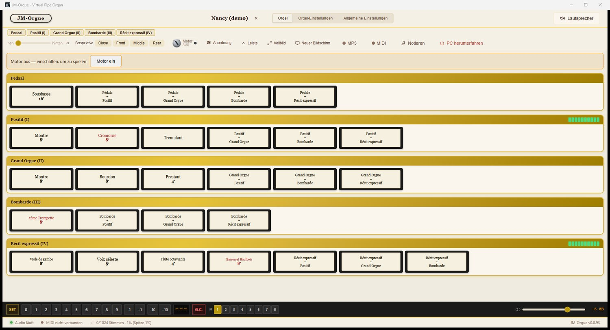
6. Der Assistent für eine neue Orgel
Wenn Sie eine Orgel zum ersten Mal laden, startet automatisch der Assistent „Orgel einrichten“. In sechs Schritten geht er alles durch, was Sie mit Ihrem eigenen Spieltisch verbinden müssen. Alles lässt sich später ändern, und Sie können den Assistenten erneut starten über Orgel-Einstellungen → Routing → Assistent. Später schließt den Assistenten und fragt beim nächsten Öffnen erneut; Überspringen (Schritt 1) überspringt ihn ganz.
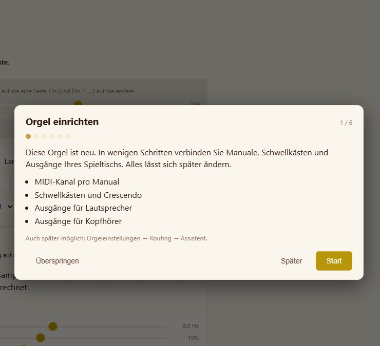
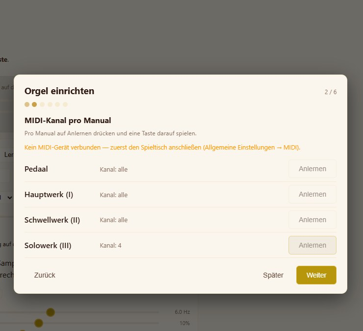
- Start: eine Übersicht der Schritte.
- MIDI-Kanal pro Manual: Wählen Sie bei jedem Manual Anlernen und spielen Sie eine Taste auf diesem Manual. Das Programm merkt sich den Kanal. Die Schaltflächen funktionieren nur, wenn ein MIDI-Gerät verbunden ist (Allgemeine Einstellungen → MIDI); sonst erscheint eine Warnung.
- Schwellkästen und Crescendo: Wählen Sie Anlernen und bewegen Sie das Pedal ganz zu und ganz auf. Dasselbe gilt für das Generalcrescendo. Hat ein Set Schwellkästen je Rank (Kapitel 9), erscheinen sie hier ebenfalls.
- Ausgänge für Lautsprecher: Wählen Sie Treiber und Gerät, speichern Sie sie als Profil „Lautsprecher“ und wählen Sie pro Manual, auf welchen Ausgängen Ihres Audio-Interfaces es klingt. Darunter stehen dieselben Auswahlmöglichkeiten für das Motorgeräusch, die Raum- und Mechanikgeräusche, die Effektregister und das Tremulantgeräusch, soweit das Set sie hat.
- Ausgänge für Kopfhörer: dasselbe für das zweite Profil, zum Beispiel einen Kopfhörerausgang. Ab dann wechseln Sie mit der Schaltfläche Lautsprecher oben rechts zwischen den beiden Profilen.
- Fertig: Die Einstellungen sind bei dieser Orgel gespeichert.
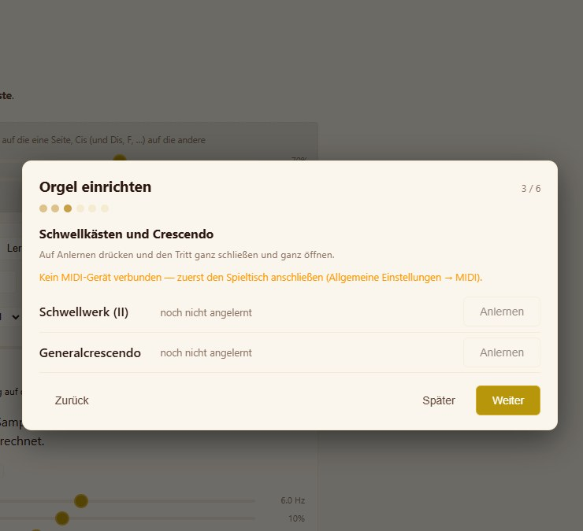
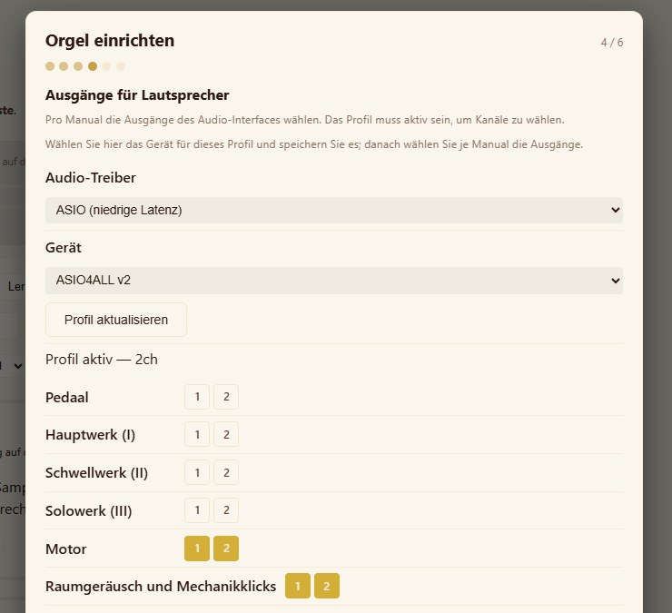
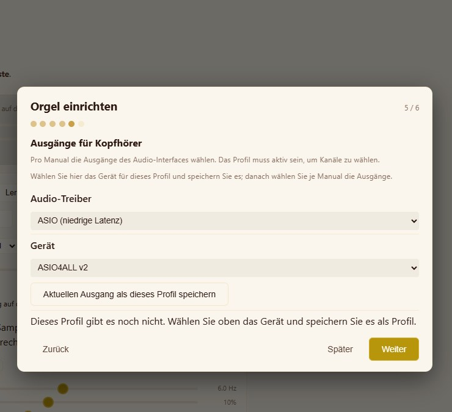
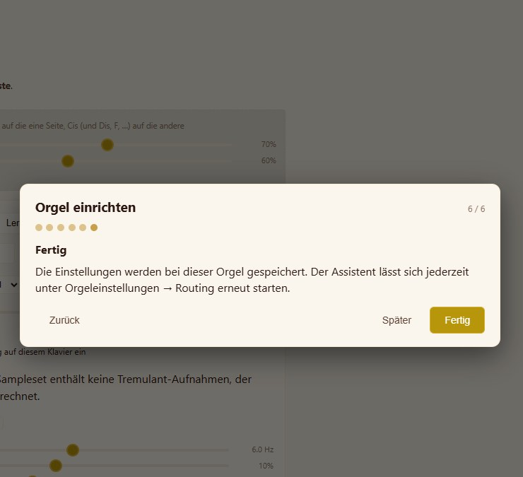
7. Orgel-Einstellungen
Alle Einstellungen, die zur geladenen Orgel gehören, werden bei dieser Orgel gespeichert. Oben stehen fünf Reiter: Klang, Crescendo, Registerreihenfolge, Routing und Alle; der letzte legt alle Blöcke untereinander.
Klang
Der erste Block enthält die Haupteinstellungen:
- Lautstärke: die Gesamtlautstärke dieser Orgel.
- Stimmung: „Original“ spielt die Pfeifen, wie sie aufgenommen wurden. Andere Stimmungen (gleichschwebend und historische Temperaturen) stimmen die Pfeifen anhand der gemessenen Tonhöhe jeder Aufnahme nach. Unter der Auswahl sehen Sie, wie viele Pfeifen eine gemessene Tonhöhe haben. Mit Eigene Stimmung… stellen Sie die Abweichung pro Ton selbst in Cent ein. Mit Scala-Datei laden… lesen Sie eine .scl-Datei (das weltweite Format für mikrotonale und historische Stimmungen der Huygens-Fokker-Stiftung); die eingelesene Stimmung erscheint in der Liste und wird für spätere Sitzungen gespeichert.
- Feinstimmung: alles zusammen höher oder tiefer, in Cent.
Hall regelt den Nachhall. Hat das Set die Kirchenakustik schon in den Aufnahmen, steht das dort (mit einer Schaltfläche Zurück zur Aufnahme (Nachhall aus), um den zusätzlichen Nachhall auszuschalten): Zusätzlicher Hall ist dann Geschmackssache. Sie wählen zwischen Algorithmisch (ein berechneter Hall mit RT60, Vorverzögerung, Dämpfung und Raumgröße, auch als Preset) und Impulsantwort mit einer eigenen Impulsantwort (IR). Mit Mix bestimmen Sie, wie viel Hall Sie hören.
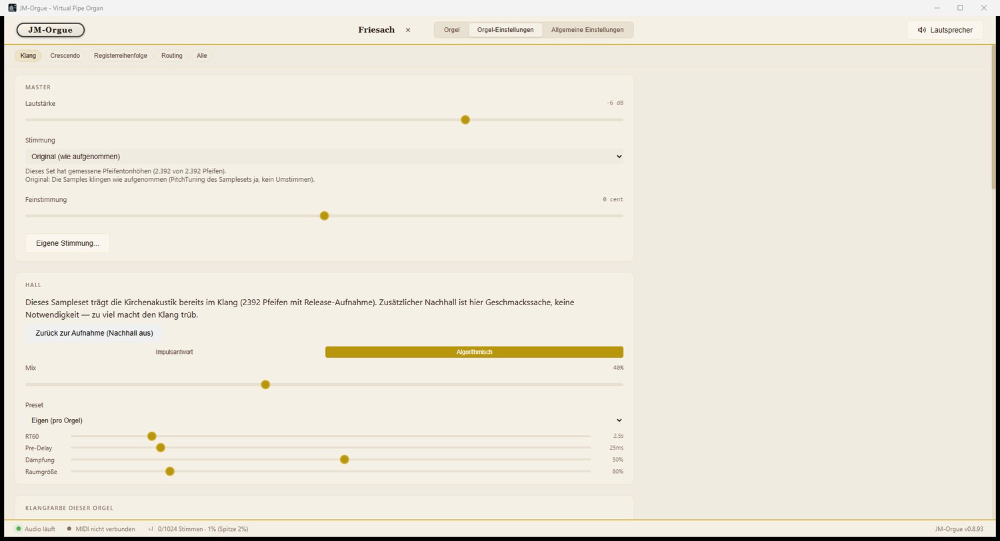
Klangfarbe dieser Orgel ist eine eigene Klangregelung pro Orgel; die Korrektur für Ihre Kopfhörer oder Lautsprecher ist getrennt, in den allgemeinen Einstellungen. Das Windmodell lässt die Orgel atmen: Ein Akkord mit vielen Registern senkt den Winddruck, wie bei einer echten Orgel, und Flöten und Zungenstimmen reagieren darauf unterschiedlich. Sie wählen die Anzahl der Windgruppen (welche Manuale sich denselben Balg teilen) und pro Gruppe die Balggröße, die Dämpfung, den maximalen Druckabfall und den Charakter des Windes.
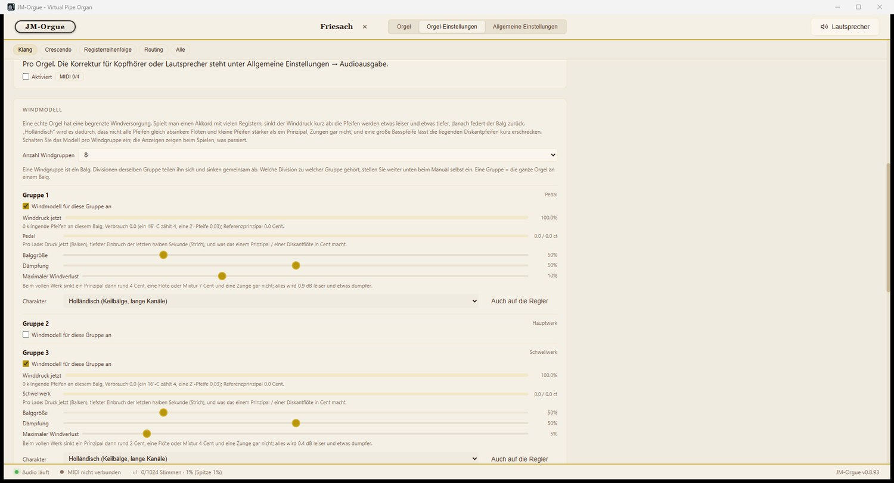
Nebengeräusche zeigt die durchlaufenden Geräusche des Sets, etwa Motor und Raumrauschen. Sie stellen die Lautstärke ein, schalten den Motor ein oder aus und können die Tastatur-Mechanik (klickende Tasten) aktivieren. Die Tastenmechanik ist standardmäßig aus, weil sie viel Speicher braucht und ein erneutes Laden der Orgel verlangt.
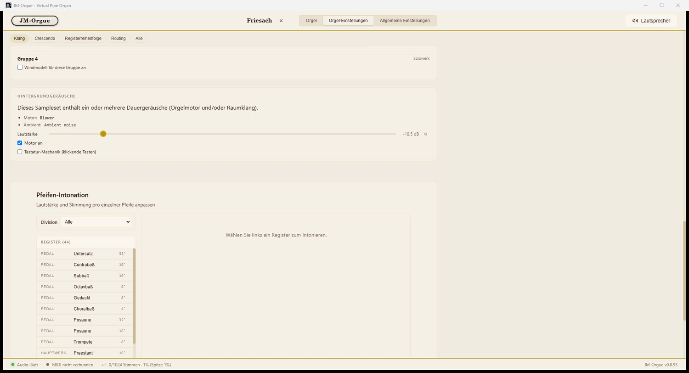
Unten steht die Pfeifen-Intonation: Wählen Sie links ein Register und passen Sie Lautstärke und Stimmung jeder einzelnen Pfeife an.
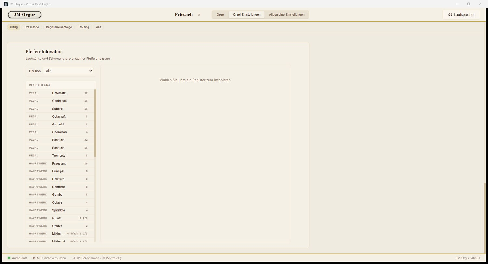
Crescendo
Das Generalcrescendo zieht beim Bewegen eines Crescendotritts Schritt für Schritt mehr Register. Sie bestimmen selbst, welche Register in welche Stufe kommen:
- Aktiviert schaltet das Crescendo ein; Stufen ist die Anzahl der Stufen.
- Auto-Füllen trägt einen Vorschlag ein, der zu den Registern dieser Orgel passt. Mit den Optionen darunter bestimmen Sie, ob Koppeln mitmachen, ob Farbregister (Sesquialtera, Cornet, Terz), 32′-Zungen und Chamaden mitmachen und ob die Oktavkoppeln erst im Tutti kommen. Löschen leert die Matrix.
- In der Matrix schaltet ein Klick auf ein Feld das Register in dieser Stufe ein oder aus; Umschalt+Klick setzt es für alle Stufen ab dieser Stufe.
- Pedal lernen verbindet Ihren Crescendotritt; unten können Sie Kanal und CC-Nummer auch von Hand eintragen.
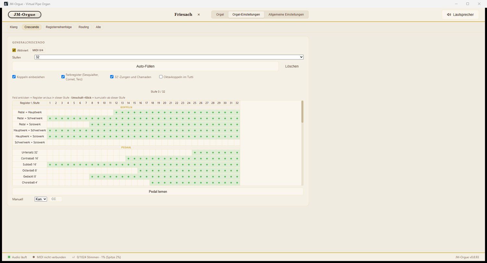
Registerreihenfolge
Hier bestimmen Sie die Reihenfolge der Register in jedem Manual. Ziehen Sie ein Register am Griff, um es zu verschieben. Pro Register sehen Sie Fußlage und Familie (die Farbe des Namens). Mit den Pfeilen ändern Sie die Reihenfolge Schritt für Schritt, und Zurücksetzen stellt die Reihenfolge des Sets wieder her.
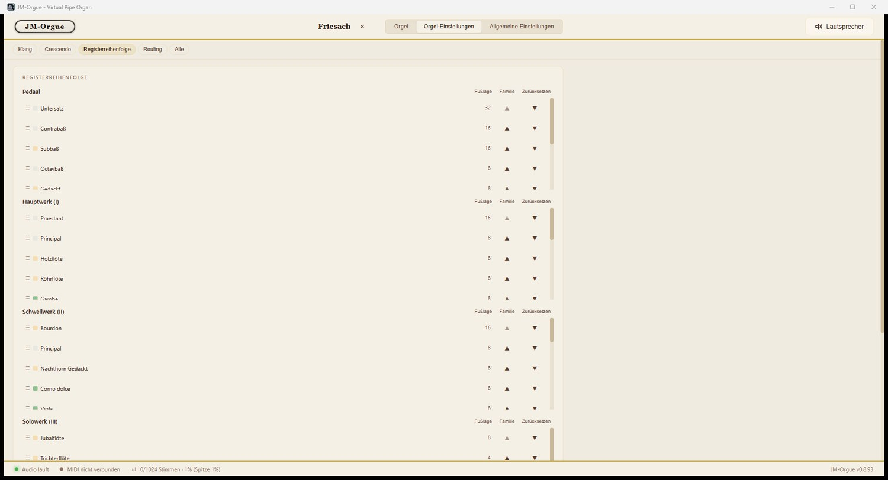
Routing
Dieser Reiter verbindet Ihre Orgel mit Ihrer Ausrüstung. Oben steht pro Manual ein Block:
- Kanal: der MIDI-Kanal, auf den das Manual hört („Alle“ = jeder Kanal). Lernen bestimmt Kanal und Bereich, indem Sie zuerst die tiefste und dann die höchste Taste spielen.
- Transp: in Halbtönen transponieren. Bereich: tiefste und höchste Taste. Kurze Oktave: für Sets mit kurzer Bassoktave.
- Schwellkasten: schaltet den Schwellkasten dieses Manuals ein; es erscheinen dann Schaltflächen, um den Tritt anzulernen, die Mindestlautstärke und die Grenzfrequenz eines geschlossenen Kastens einzustellen. Der Tritt lässt sich auch direkt vom Orgelbildschirm aus lernen: Rechtsklick auf die grüne LED-Leiste neben dem Manualnamen — oder 2 Sekunden lang auf einem Touchscreen halten — und derselbe „Tritt geschlossen / Tritt offen“-Dialog erscheint.
- Windversorgung: zu welcher Windgruppe das Manual gehört.
- Panorama und Ausgänge: der Platz im Stereobild und die Ausgangskanäle Ihres Audio-Interfaces, auf denen das Manual klingt. Zwei aufeinanderfolgende Ausgänge bilden ein Stereopaar; ein einzelner Kanal klingt mono.
- C/Cis: verteilt die Pfeifen auf zwei Seiten, wie die C- und Cis-Laden einer echten Orgel; die globale Stärke und der Abfall stehen im Block darüber.
- Tremulant LFO: Hat das Set keine echten Tremulantaufnahmen, berechnet das Programm den Tremulanten. Geschwindigkeit, Amplitude und Tonhöhe stellen Sie hier ein.
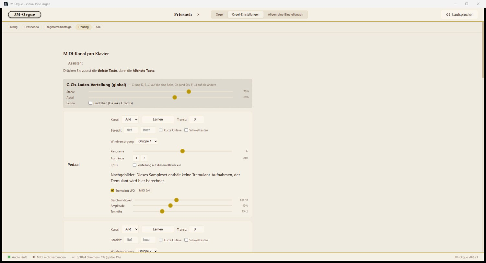
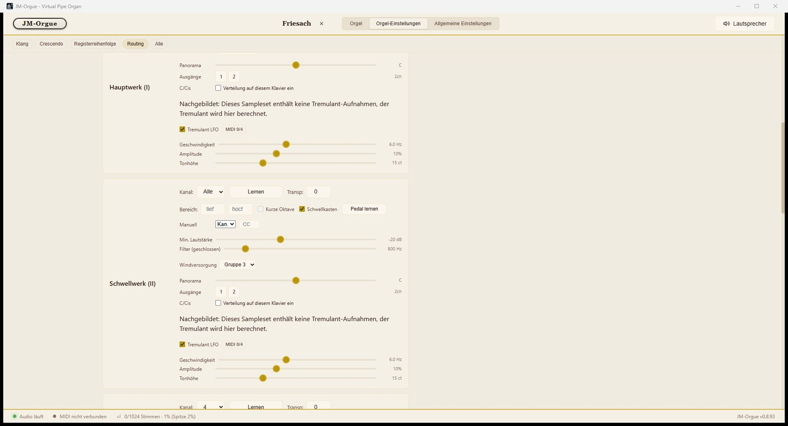
Darunter steht Audioausgabe Hintergrundgeräusche: Für jede Geräuschart wählen Sie, welche Ausgänge sie nutzt. Motor ist das Motorgeräusch; Umgebungsgeräusch und Mechanikklicks gilt für das Raumrauschen und die Klicks von Registern und Tasten; Sets mit Effektregistern (Zimbelstern, Nachtigall und dergleichen) und Tremulantgeräusch bekommen eine eigene Zeile. Das ist vor allem bei mehr als zwei Ausgängen wichtig, wenn die Manuale auf anderen Kanälen klingen als dem Standard 1–2. Direkt darunter:
- Durchgehende Klaviatur: Tasten außerhalb des aufgenommenen Bereichs eines Registers spielen die nächstgelegene Pfeife, auf die richtige Tonhöhe verschoben, statt zu schweigen. So spielt eine Tastatur mit 61 Tasten auf einem Set mit weniger Tönen weiter. Bass- und Diskanthälften eines geteilten Registers (Trompete 8 B/D, Cornet D, Mixtur Bass …) hören am Teilungspunkt auf — der Diskant läuft oben weiter, der Bass unten, aber sie überschneiden sich nie.
- Pfeifen automatisch nachstimmen: stimmt die Pfeifen anhand ihrer gemessenen Tonhöhe nach und behält dabei absichtlich schwebende Register. Standardmäßig an.
- Tonhöhe-Korrektur: alles zusammen höher oder tiefer in Cent (Null setzt sie zurück).
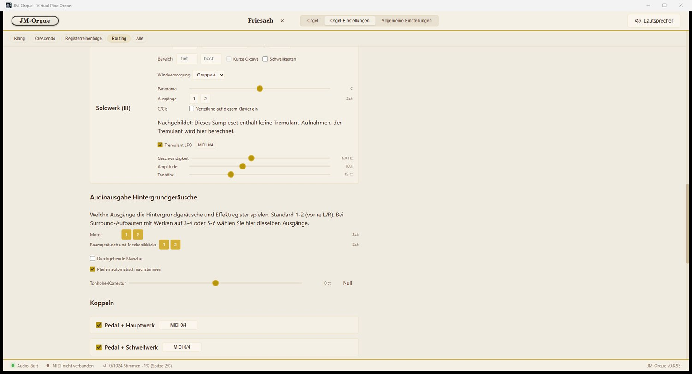
Weiter unten stehen Koppeln (ein- oder ausschalten, mit einer MIDI-Taste pro Koppel) und Zusätzliche Koppeln: Koppeln, die nicht im Sample-Set stehen, sich aber aus der Klaviaturaufteilung ergeben; haken Sie an, was Sie zusätzlich wollen, und sie erscheinen sofort in der Koppelleiste. MIDI-Zuordnungen ist eine einzige Liste aller MIDI-Zuordnungen dieser Orgel, die Sie dort von Hand ändern, entfernen oder hinzufügen können. Ganz unten lässt .mid öffnen die Orgel eine MIDI-Datei abspielen.
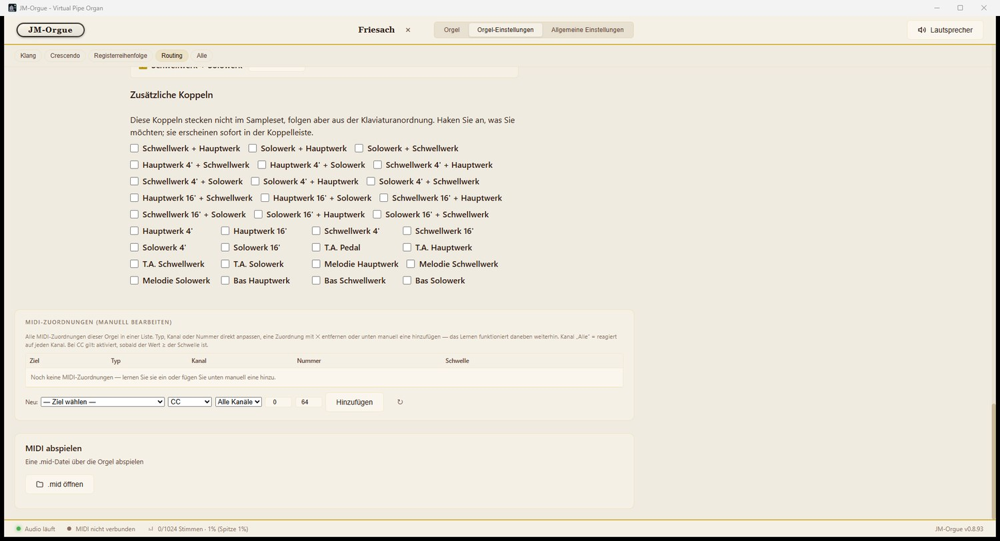
8. Allgemeine Einstellungen
Diese Einstellungen gelten für das ganze Programm. Die Reiter sind Audioausgabe, Sample-Fix, MIDI, Tasten anlernen, Darstellung und Update und Feedback.
Audioausgabe
- Audio-Treiber und Gerät: Für die geringste Latenz wählen Sie ASIO (zum Beispiel den Treiber Ihres Audio-Interfaces); WASAPI arbeitet mit der Standard-Windows-Soundkarte. Die Zeile „Aktuell“ darunter zeigt, was gerade klingt.
- Testsignal: Klicken Sie auf eine Kanalnummer, um Ton genau auf diesen Ausgang zu schicken, damit Sie hören, welcher Stecker zu welchem Lautsprecher gehört.
- Polyphonie und Rechenkerne fürs Mischen: die maximale Zahl gleichzeitig klingender Pfeifen und die Zahl der Prozessorkerne, auf die die Mischarbeit verteilt wird. Die Standardwahl passt zu Ihrem Computer; die Lastanzeige zeigt die Wirkung.
- Stereo-Samples in Stereo wiedergeben: behält das Stereobild von Stereoaufnahmen. Aus bedeutet einen Mono-Mix und halbiert den Speicherbedarf solcher Sets.
- Startpuffer je Aufnahme (neu in dieser Version): wie viel jeder Pfeifenaufnahme sofort im Speicher liegt: 200 ms, 300 ms, 500 ms, 1 s oder 2 s (Standard). Ein kürzerer Puffer spart viel Speicher und Ladezeit; der Rest wird während des Spielens nachgeladen. Die Wahl wirkt nach dem erneuten Laden der Orgel.
- Puffergröße: kleiner bedeutet weniger Latenz, belastet Ihren Computer aber mehr. Anwenden aktiviert die Wahl.
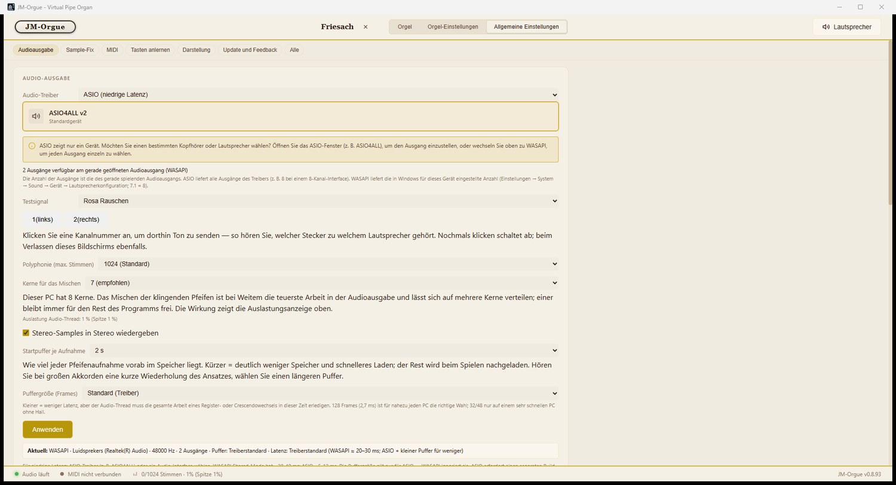
Ausgabeprofile speichern zwei vollständige Ausgabeeinstellungen, zum Beispiel Lautsprecher über ASIO und Kopfhörer über WASAPI, einschließlich der Kanalwahl pro Manual. Wählen Sie den gewünschten Ausgang, klicken Sie bei Lautsprecher oder Kopfhörer auf Aktuelle Auswahl speichern, und wechseln Sie danach mit der Schaltfläche Lautsprecher oben rechts oder mit einer angelernten MIDI-Taste. Das aktive Profil ist markiert.
Die Korrektur für Kopfhörer oder Lautsprecher wendet eine Klangkorrektur auf den Ausgang selbst an (nicht auf die Orgel): Wählen Sie, für welches Profil sie gilt, schalten Sie sie ein und wählen Sie ein Preset aus der AutoEq-Liste, oder importieren bzw. exportieren Sie eine eigene Korrektur.
Darunter stehen die Optionen, das Programm automatisch mit Windows zu starten, die zuletzt geöffnete Orgel automatisch zu laden, das Kreuz auf einem zusätzlichen Bildschirm die ganze Software beenden zu lassen und die letzte Registrierung wiederherzustellen. Das Automatische MIDI-Archiv zeichnet im Hintergrund alles auf, was Sie spielen, als .mid-Datei pro Sitzung: Es startet bei der ersten Note und stoppt nach einer Stille.
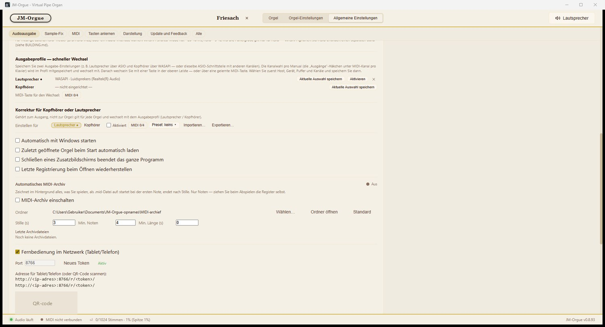
Mit der Fernbedienung im Netzwerk (Tablet/Telefon) bedienen Sie die Orgel von einem Tablet oder Telefon im selben WLAN. Das Programm zeigt eine Adresse und einen QR-Code zum Scannen, und Sie wählen, welche Teile und welche Manuale auf dem externen Bildschirm erscheinen. Beim ersten Mal fragt die Windows-Firewall, ob JM-Orgue Verbindungen empfangen darf: Wählen Sie „Zugriff zulassen“ für private Netzwerke.
Unten steht die Abtastrate. Sie folgt der Soundkarte selbst: Unter ASIO stellen Sie sie im Panel des Treibers ein, unter WASAPI in den Windows-Soundeinstellungen.
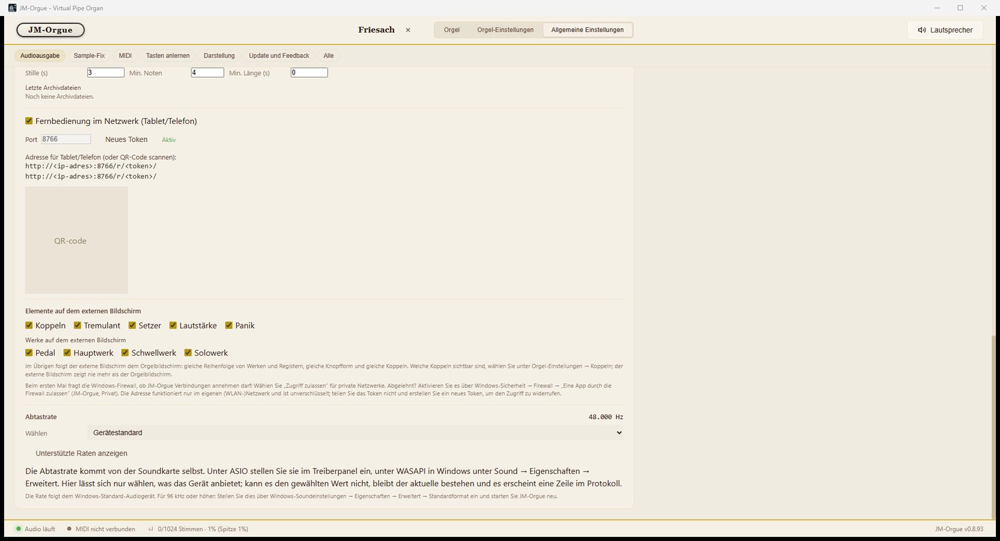
Sample-Fix
Zwei Werkzeuge, um die Samples der geladenen Orgel aufzuräumen. Anfangsstille findet und schneidet Stille am Anfang der Samples weg (die Stille-Schwelle in dB und den zu behaltenden Vorlauf stellen Sie selbst ein); Loops findet eine gute Sustain-Schleife, bindet einen Crossfade für einen nahtlosen Übergang ein und schreibt die Schleifenpunkte in die Datei, wahlweise nur für Dateien ohne Schleife. Mit Scannen sehen Sie zuerst, was sich ändern würde. Die Originale werden zuerst in einem Ordner _backup gesichert, bevor die Dateien überschrieben werden.
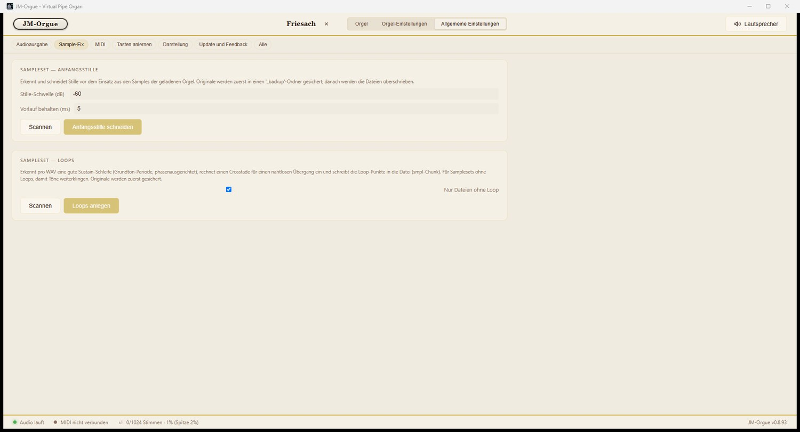
MIDI
MIDI-Eingang zeigt die angeschlossenen MIDI-Geräte (mit Geräte aktualisieren suchen Sie erneut); unter Bluetooth MIDI suchen Sie mit Scannen nach drahtlosen Geräten. Die Rückmeldung (MIDI-Out) lässt Ihren Spieltisch mit der Registrierung mitleuchten: Wählen Sie das Protokoll (Registerlampen über Note On/Off, ein Hauptwerk-Textdisplay oder einen Johannus-/Content-Spieltisch), den MIDI-Ausgang, den Kanal und die Basisnote. Jedes Register erhält dann automatisch eine Notennummer ab der Basisnote, oder Sie lernen mit Pro Register lernen… die echte Spieltischtaste pro Register an.
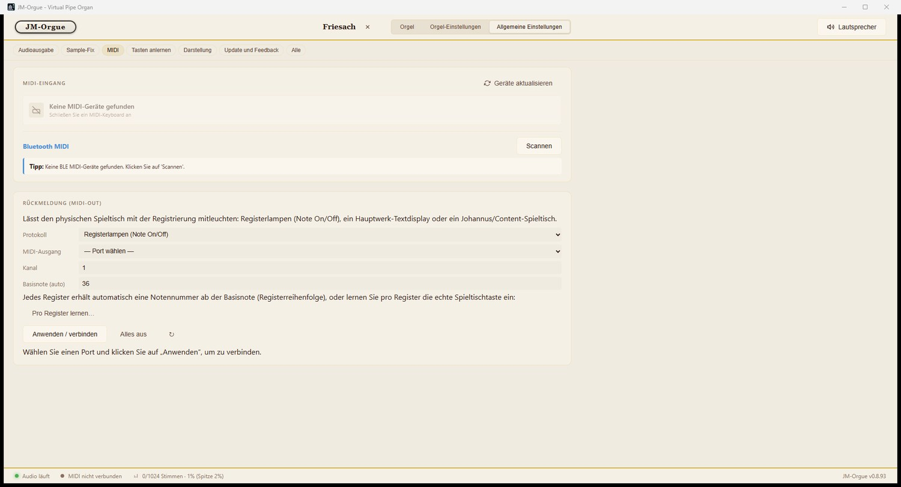
Tasten anlernen
Hier lernen Sie die festen Spieltischtasten (Pistons) an: Stimmer, SET, Preset-Schritte, Speicherebenen und Computer herunterfahren. Die Zifferntasten 0–9 lernen Sie auf der Setzerleiste selbst an (Rechtsklick oder 3 Sekunden gedrückt halten).
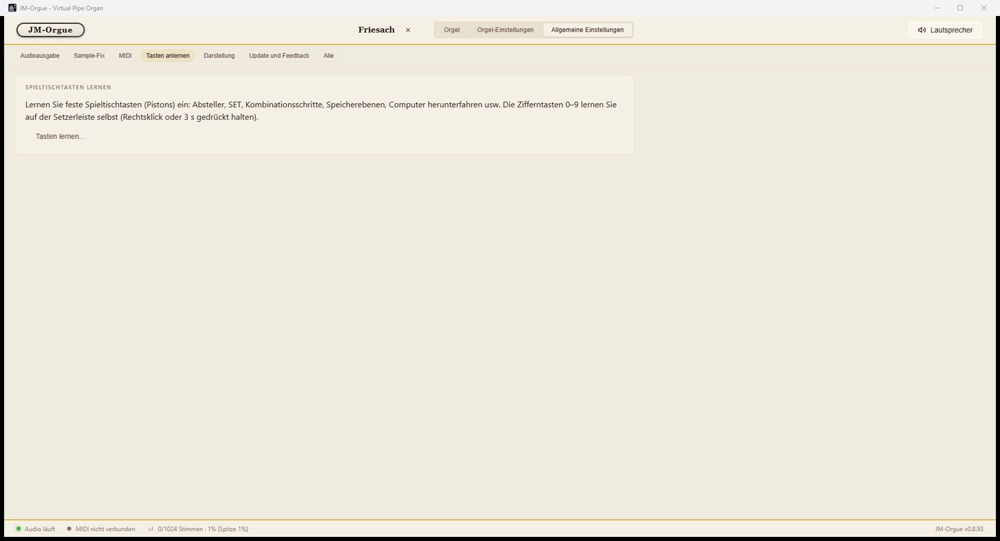
Darstellung
Wählen Sie die Sprache des Programms (Nederlands, English, Français, Deutsch, Polski, Italiano und Español) und das Erscheinungsbild: fünf fertige Farbpresets (Standard, Klassisches Holz, Modern minimalistisch, Nacht und Abend), oder stellen Sie eigene Farben zusammen, geben Sie ihnen einen Namen und exportieren Sie sie. Darunter passen Sie Schriftart, Größe und Stärke des Registertexts an, außerdem den Hintergrund.
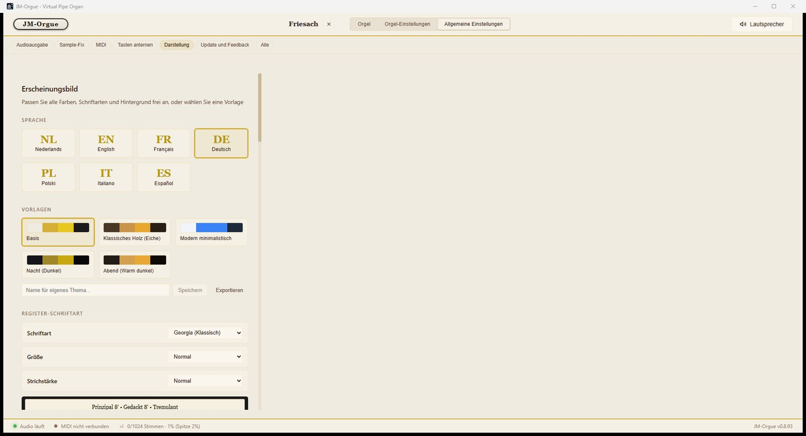
Update und Feedback
Hier finden Sie die Versionsnummer, die Quellenangaben zu den verwendeten Kopfhörer-Presets und Lautsprecherdaten und die Schaltflächen Feedback senden…, Über GitHub (Issues) und Auf Updates prüfen.
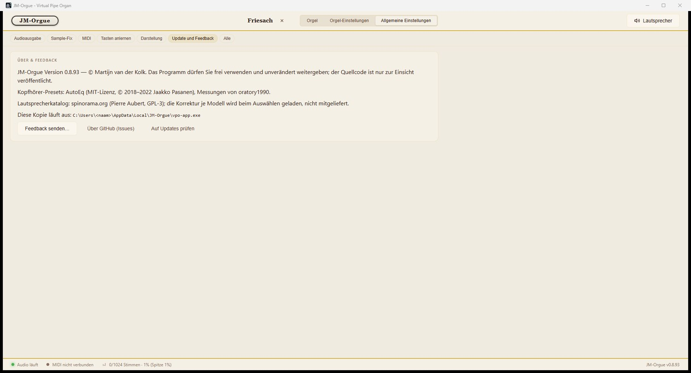
9. Akustische Konfiguration eines Sets
Eine Orgeldefinition kann auf eine zusätzliche Datei verweisen, JM-ACOUSTICS.json, die die Akustik des Sets beschreibt: Schwellkästen, die an einem Rank statt an einem Manual hängen, Impulsantworten für den Hall, Mischrouten und Ausgänge. Hat Ihr Set eine solche Datei, erkennen Sie das an einem zusätzlichen Block unter Orgel-Einstellungen → Klang.
- Das Programm liest die Datei und prüft sie: die Dateigröße, ob alle Verweise stimmen, ob die Pfade im Orgelordner bleiben und ob die Pfeifenzuordnungen zur geladenen Definition passen. Stimmt etwas nicht, spielt die Orgel einfach mit der normalen Definition, und der Block nennt den Grund, warum die Konfiguration nicht geladen wurde.
- Schwellkästen je Rank: Ranks, die die Datei in einen Kasten stellt, erhalten einen eigenen Schwellkasten mit eigenem Schwelltritt, unabhängig vom Manual, auf dem sie gespielt werden. Ein Rank, den zwei Manuale nutzen, folgt so immer demselben Kasten. Den Tritt lernen Sie unter Routing (Pedal lernen) oder im Assistenten an.
- Impulsantworten aus dem Set stehen unter dem Block, mit Kanälen und Dauer. Mit Als Hall verwenden übernehmen Sie eine als Faltungshall. Die Rolle der Kanäle in solchen Aufnahmen ist nicht festgelegt; das Programm nutzt die ersten beiden als Stereopaar.
- Mischrouten, Ausgangsbusse und Effektübergänge aus der Datei werden vorerst nicht automatisch angewendet; die normale Definition bleibt maßgebend.
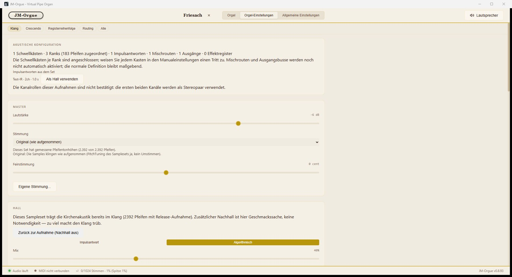
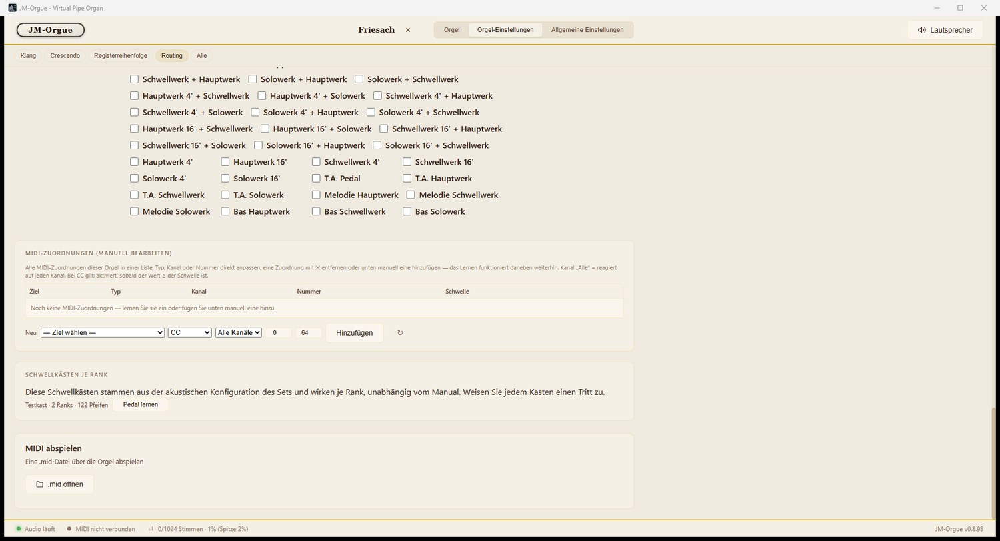
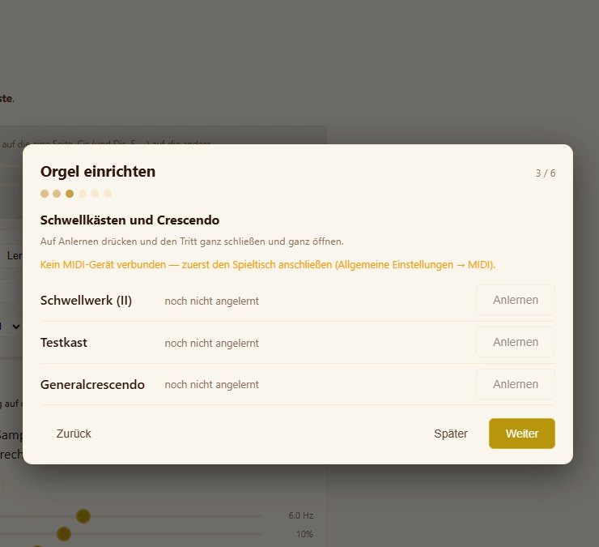
10. Tastenkürzel und Tipps
| Taste | Funktion |
|---|---|
| F1 F2 F3 | Orgel, Orgel-Einstellungen und Allgemeine Einstellungen. |
| F11 | Vollbild (Spieltischmodus) ein oder aus. |
| Esc | Vollbild beenden. |
| Rechtsklick oder 3 s gedrückt halten | Auf einer Schaltfläche der Setzerleiste: diese Schaltfläche mit einer Spieltischtaste verbinden (MIDI anlernen). |
| Doppelklick auf die Lautstärke | Gesamtlautstärke zurück auf den Standardwert. |
| Karte 3 s gedrückt halten | In der Bibliothek: das Foto dieser Karte erneut suchen. |
- Alle Einstellungen werden bei jeder Orgel gespeichert, auch wenn Sie die Orgel schließen oder das Programm beenden.
- Für einen festen Spieltisch: Schalten Sie Automatisch mit Windows starten und Zuletzt geöffnete Orgel automatisch laden ein und nutzen Sie den Spieltischmodus.
- Bei mehr als zwei Ausgängen: Wählen Sie die Ausgänge pro Manual unter Routing und danach dieselben Ausgänge für die Hintergrundgeräusche.
11. Problemlösung und Feedback
| Problem | Was Sie versuchen können |
|---|---|
| Kein Ton | Läuft der Motor? Steht unten „Audio aktiv“? Ist unter Audioausgabe das richtige Gerät eingestellt, und passen die Ausgänge pro Manual zu Ihrem Audio-Interface? Nutzen Sie das Testsignal, um die Ausgänge zu hören. |
| Die Tastatur reagiert nicht | Unten steht „MIDI nicht verbunden“, solange es kein MIDI-Gerät gibt. Prüfen Sie Allgemeine Einstellungen → MIDI und den MIDI-Kanal pro Manual unter Routing. |
| Die Orgel klingt verstimmt | Prüfen Sie, ob Pfeifen automatisch nachstimmen an ist, und wählen Sie unter Klang die Stimmung „Original“ oder die gewünschte Temperatur. |
| Knacken oder Stottern | Verringern Sie die Polyphonie, ziehen Sie weniger Register, schalten Sie den Hall aus oder wählen Sie einen größeren Puffer. Ein kurzer Startpuffer braucht eine schnelle Festplatte; wählen Sie sonst einen längeren. |
| Zu wenig Speicher | Wählen Sie einen kürzeren Startpuffer, schalten Sie Stereo-Samples aus oder Hörpositionen, die Sie nicht nutzen. |
| Hintergrundgeräusche oder Effektregister sind nicht auf dem richtigen Lautsprecher zu hören | Wählen Sie unter Routing bei „Audioausgabe Hintergrundgeräusche“ dieselben Ausgänge wie für die Manuale. |
Feedback senden… (Allgemeine Einstellungen → Update und Feedback) erstellt eine Nachricht mit Ihrer Meldung und den Logdateien der letzten Sitzungen, damit der Entwickler sehen kann, was passiert ist. Sie können Ihre Meldung auch auf der Projektseite bei GitHub einstellen.